|
|
|
The use of unit root tests to distinguish between trend and difference stationary data has become an essential tool in applied research. Accordingly, EViews offers a variety of standard unit root tests, including augmented Dickey-Fuller (ADF), Phillips-Perron (PP), Elliot, Rothenberg, and Stock (ERS), Ng and Perron (NP), and Kwiatkowski, Phillips, Schmidt, and Shin (KPSS) tests (“Unit Root Testing”).Our discussion follows the basic framework outlined in Perron (1989), Vogelsang and Perron (1998), Zivot and Andrews (1992), Banerjee et al. (1992) and others. For a useful overview of the literature, see Perron (2006). Note that our notation differs slightly from the above sources.
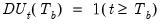
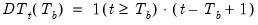
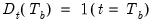
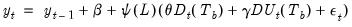 are i.i.d. innovations, and 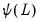 is a lag polynomial representing the dynamics of the stationary and invertible ARMA error process. Note that the break variables enter the model with the same dynamics as the
innovations.
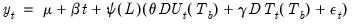
to 1 (
) to evaluate the null hypothesis. As with conventional Dickey-Fuller unit root test equations, the
lagged differences of the
are included in the test equations to eliminate the effect of the error correlation structure on the asymptotic distribution of the statistic.
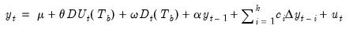
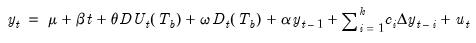
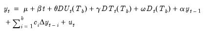
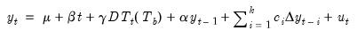
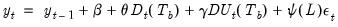 are i.i.d. innovations, and
is a lag polynomial representing the dynamics of the stationary and invertible ARMA error process, and
is a drift parameter. Note that the full impact of the break variables occurs immediately.
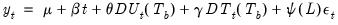
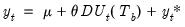
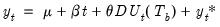
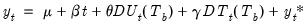
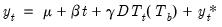
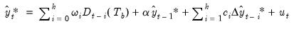
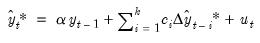 break dummy variables 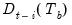 in Equation (42.62) to eliminate the asymptotic dependence of the test statistic on the correlation structure of the errors and to ensure that the asymptotic distribution is identical to that of the corresponding IO specification. See Perron and Vogelsang (1992b) for discussion.
t-statistic (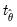) Maximize 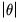 t-statistic (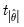), Minimize or Maximize
t-statistic (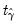), Maximize 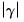 t-statistic (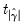), Maximize 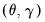 F-statistic (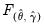).
To compute a breakpoint unit root test, open a series window and select View/Unit Root Tests/Breakpoint Unit Root Test... to display the dialog:
for each of the augmented Dickey-Fuller test specifications (“Lag Selection”). You may choose between Akaike criterion (AIC), Schwarz criterion (BIC), Hannan-Quinn criterion (HQC), Modified Akaike, Modified Schwarz, Modified Hannan-Quinn, t-statistic, F-statistic, and Fixed lag specifications. For all but the Fixed lag method, you must provide a Max. lag to test; by default, EViews will suggest a maximum lag based on the number of observations in the series. For the test methods (t-statistic, F-statistic), you must specify a p-value for the tests; for the Fixed lag method, you must specify the actual number of use using the User lags edit field.
in the ADF test (Dickey-Fuller min-t), minimizing the t-statistic for the intercept break coefficient (Intercept break min-t), maximizing the t-statistic for the break coefficient (Intercept break max-t), maximizing the absolute value of the t-statistic for the intercept break coefficient (Intercept break max-abs-t), or providing a specific date (User-specified).
For models with a trend break, there will be corresponding entries for minimizing and maximizing the t-statistic or absolute value of the t-statistic for the trend break coefficient. For models with both an intercept and trend break you will be offered an additional choice of using the F-statistic for the break coefficients (Incpt.+trend break max-F) to select the breakpoint.You will be prompted for specify a trimming percentage when employing methods that involve the t-statistic or F-statistic of the break coefficients, EViews will remove from consideration as the breakpoint this percentage of the observations from each endpoint.For the User-specified break choice you will be prompted to specify a single date.
statistics. For methods involving one of
or
, the output contains the coefficient value, standard error, and the corresponding t-statistic; for the F-statistic method, the output columns consist of the estimates of
, the standard error of
, the estimates of
, the standard error of
, and the F-statistic for testing the significance of the two coefficients.
To perform the unit root test with breakpoints, we click on View/Breakpoint Unit Root Test... which brings up the test dialog. In this example Perron tests for the existence of a unit root of the data in levels. The test assumes an innovation outlier break, with a trend specification given by Model 2 (Equation (42.53), above); trending data with both intercept and trend break.Perron selects a breakpoint by minimizing the Dickey-Fuller t-statistic, and selects a lag length using the F-test.We can match these settings by clicking the Level and Innovation Outlier buttons, changing the Basic Trend specification to Trend and Intercept and the Breaking Trend specification to Intercept, selecting Dickey-Fuller min-t as the Breakpoint selection, and changing the Lag length Method to F-statistic:Clicking OK produces the following results:The lower section reports the Augmented Dickey-Fuller t-statistic for the unit root test, along with Vogelsang’s asymptotic p-values. Our test resulted in a statistic of -5.50, with a p-value less than 0.01, leading us to reject the null hypothesis of a unit root.In this test, Perron again assumes an innovation outlier break, with a trend specification given by Model 2 (Equation (42.53), above); trending data with intercept and trend break. However Perron now selects the breakpoint corresponding to the minimum intercept break t-statistic, and selects the lag-length using the t-statistic method. We replicate these choices with the following dialog settings:Again, the top section of this output describes the test that was performed, notably the underlying series, the trend and break specifications, and the break type. From the second section we can see that again a date of 1929 was chosen as the most likely break date. The t-statistic based lag selection selected seven lags for this test regression.The second section displays the test statistic and associated p-value. The statistic value of -4.918 matches the value report by Perron, and the p-value again means that we reject (at a 5% significance level) the null hypothesis of a unit root.The t-statistic of -3.869 matches that reported by Perron, and the corresponding p-value of 0.27 indicates we cannot reject the hypothesis that the log of the GNP deflator has a unit root.
 , 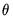,
, 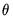,  . 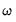. Following Perron (1989), Perron and Vogelsang (1992a, 1992b), and Vogelsang and Perron (1998), we consider four distinct specifications for the Dickey-Fuller regression which correspond to different assumptions for the trend and break behavior:
. 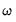. Following Perron (1989), Perron and Vogelsang (1992a, 1992b), and Vogelsang and Perron (1998), we consider four distinct specifications for the Dickey-Fuller regression which correspond to different assumptions for the trend and break behavior: and
and  to zero yields a test of a random walk against a stationary model with intercept break.
to zero yields a test of a random walk against a stationary model with intercept break. to zero produces a test of a random walk with drift against a trend stationary model with intercept break.
to zero produces a test of a random walk with drift against a trend stationary model with intercept break. and
and  to zero tests a random walk with drift null against a trend stationary with trend break alternative.
to zero tests a random walk with drift null against a trend stationary with trend break alternative.  to 1,
to 1,  , to evaluate the null hypothesis.
, to evaluate the null hypothesis.  to include in the test equation, and you must specify the candidate date
to include in the test equation, and you must specify the candidate date  at which to evaluate the break. EViews offers a number of tools for you to use when making these choices.
at which to evaluate the break. EViews offers a number of tools for you to use when making these choices. to be large enough to eliminate the effect of the correlation structure of the errors on the asymptotic distribution of the statistic
to be large enough to eliminate the effect of the correlation structure of the errors on the asymptotic distribution of the statistic . A different optimal lag length
. A different optimal lag length  is obtained for each candidate break date.
is obtained for each candidate break date.  lags.
lags.  .
. .
. is chosen using the specified method, and the test statistic of interest is computed. The procedure is repeated for each possible break date, and the optimal break date is chosen from the candidate dates.
is chosen using the specified method, and the test statistic of interest is computed. The procedure is repeated for each possible break date, and the optimal break date is chosen from the candidate dates. or
or  , trimming is performed to remove some endpoint values from consideration as the break date.
, trimming is performed to remove some endpoint values from consideration as the break date.